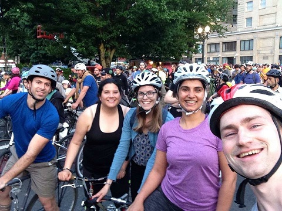
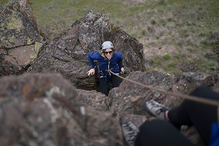
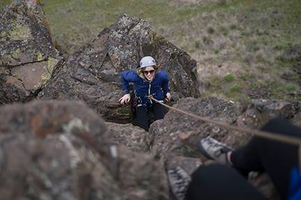

Biking
I first moved here knowing practically nothing about this city except that it was bike friendly. I had been a bike commuter in San Diego for the last few years and was looking forward to continuing that trend in Oregon. Once up here I was introduced to fun biking activities such as Sunday Parkways, Bridge Pedal, Pedalpalooza and Midningt Mystery Ride. I love biking and am happy that I have plenty of opporunties to do it here.

Hiking
I hiked occasionally with my family growing up when we went on vacations to places like Glacier National Park, but I didn't really get into it until I moved here. Now, I'm an avid hiker heading out to the Gorge every opportunity I get. I thoroughly enjoy wildflower hikes in the spring and summer, and aspire to climb as many peaks in the area as I can. So far I've summited Mt. St. Helens and South Sister and have plans to add a few more summits to that list in summer 2017.


Climbing
I only started rock climbing in Winter 2016, but am enjoying it so far. I climb regulary at the local gym (Planet Granite) and have climbed outdoors a few times at Horsetheif Butte, Frenchman's Coulee and Little Cougar Rock. I graduated from the Mazama's BCEP program (Basic Climbing Education Program) in April 2017 and hope to continue practicing my rock and mountaineering skills in the future!
 

Music
I played piano for 10 years growing up so music has always been an important part of my life. Portland has so many awesome music venues and I'm happy that great acts regularly come to town to put on shows. I've seen the Black Keys and Jack White at the Moda Center, Phoenix, Vampire Weekend and Modest Mouse at Crystal Ballroom, Tennis and Toro y Moi at Wonder Ballroom, The Japanese House at Holocene and plenty of amazing local bands at events like PDX Pop Now and the summertime Concerts in the Park series. In addition, Portland has really cool organizations like Piano, Push Play! which places pianos around the city in the summertime for people to play. It's so much fun!